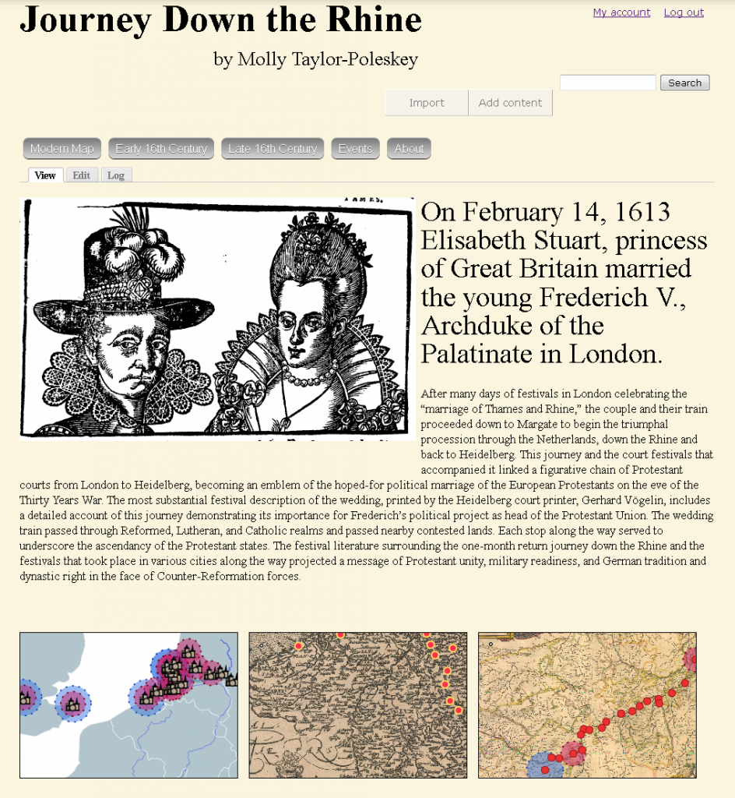
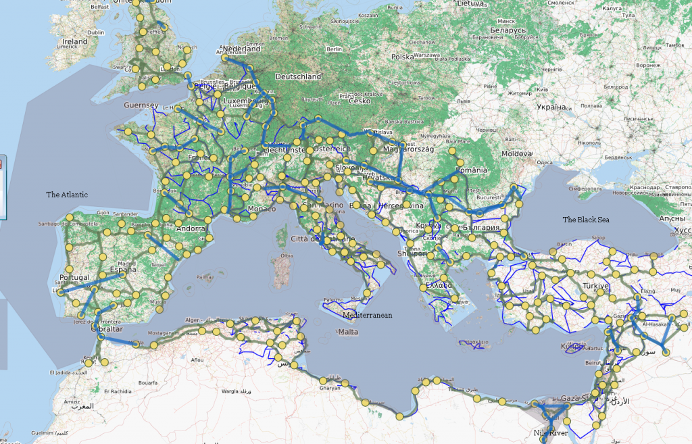
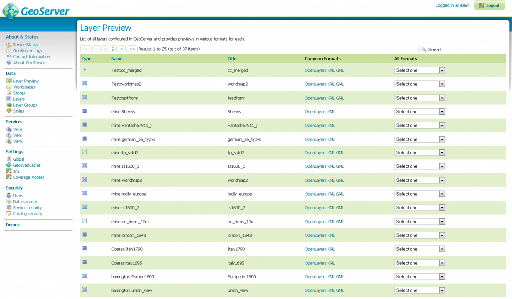
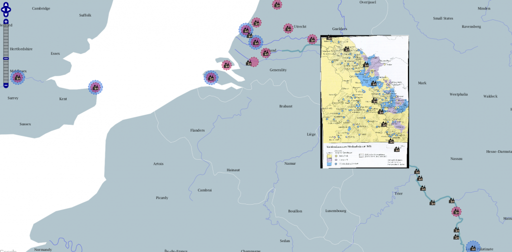
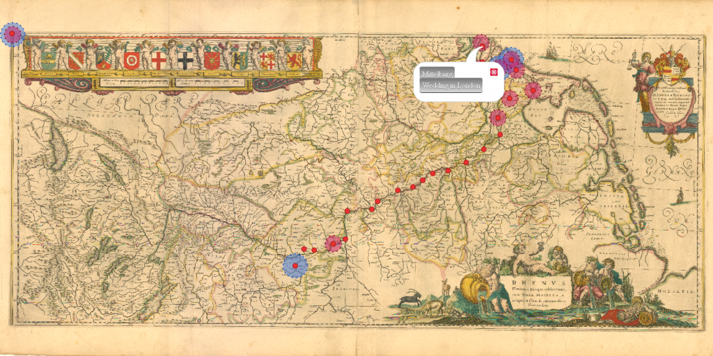
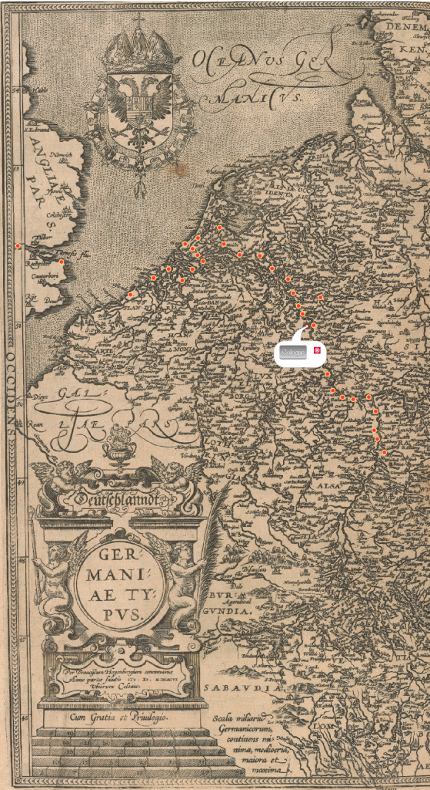
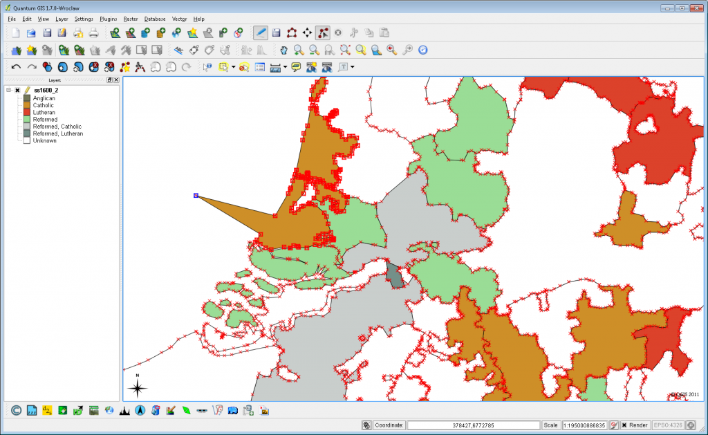
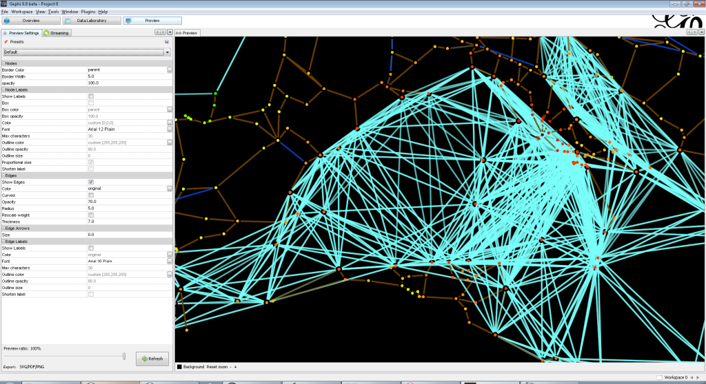
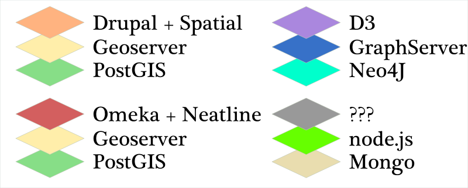

Today at the HASTAC V conference, I’ll be demoing the spatially-enabled Drupal sites I’ve been developing here at Stanford and the Geoserver+PostGIS backend that these sites point to. I’m going to post the text and images from the accompanying poster below, but first I wanted to better position the concept. As it stands, there are a number of movements to create large-scale infrastructure to support digital humanities research. Projects like SEASR and Bamboo and Omeka are serious development to produce tools and server-side software designed for humanists. On the other end of the process sit the hundred blossoming flowers of a variety of digital humanities projects, written using a variety of standards (and no standards at all). Obviously, demoing a Drupal/Geoserver/PostGIS solution isn’t either of these. There’s little if any custom code involved, there is no developer time slated to change that and really the demo and poster focus on developing standardized resources by offering this as one example.
This is fundamentally an argument directed at administrators looking to support digital humanities work at their universities and not researchers looking to perform digital humanities work, but it is meant to push that latter group toward agitating for action from the former. I’ve had enough experience now with digital humanities projects to know that when you’re collaborating with computer scientists or contracting developer resources without a sense of standardized, centralized resources, then the data, code and tool decisions tend to be made based on expediency or a desire to experiment with new, unsupported and/or experimental technologies. The result, as evidenced by any quick survey of digital humanities projects, is a mish-mash of data storage practices, metadata standards, codebases and data models. This has led to the ex post facto justification that such projects are by necessity “boutique” development, and that standardization can only go so far and will likely cause damage to knowledge-creation.
Lack of standards is not a major problem if you end your collaboration with something that is fundamentally finished. If, however, you want to extend the code, modify the data or integrate a new tool or service, you may be in trouble. So, what I’m proposing with the Drupal Spatial distribution tied to a Geoserver stack integrating a PostGIS database is to embrace a good, well-supported and well-known infrastructure because that will dramatically improve the reusability of your data and code simply because you’re forced to put it into a good, well-supported and well-known set of data structures and codebases. It will also allow you to handle the fundamental, commoditized aspects of the data (such as spatial geometries) and focus development and research capital on the novel and sophisticated aspects particular to the research.
The immediate criticism is that you’re saddled with Geoserver/PHP/Postgres/etc. There’s no real way to justify that if your developers have expertise in different technologies. That’s why this demo is directed at administrators concerned with digital humanities support. If this kind of stack exists and is supported at the institutional level, such that systems administration, database administration, support and set-up are extremely accessible, then you can use that accessibility in a negotiation with digital humanities scholars to convince them to adopt standardized data models, data management practices, tools and codebases. Not only does this improve the reusability of the product of digital humanities research, it also allows the supporting institution to extend and expand their support for whatever research infrastructure decided upon, rather than attempting to support a wide variety of disparate technologies, models, data standards and tools.
With that mind, below are the images and text from the poster I’ll have up at HASTAC V:
Journey Down the Rhine as well as The Shape of the Roman World and other digital humanities projects at Stanford utilize a spatially-enabled distribution of the Drupal CMS that points to a PostGIS-enabled Geoserver for additional spatial content and geoprocessing. This leverages Stanford’s strong Drupal community to provide support and extensibility for the collaborative and presentation-oriented Drupal sites while allowing for sophisticated spatial analysis and standards-driven centralized services for spatial data due to the research Geoserver component.


Most spatial data can be treated as a commodity and supported with standardized tools, data models and representation methods.

The Geoserver web interface for managing map layers.

Raster and vector datasets served through Geoserver to Drupal
Centralization of services provides the capacity to foreground standards for metadata, data management, documentation and peer review. The cost to access such services is in the form of meeting minimum standards.
Development and/or adoption of standardized but extensible delivery methods allows for technical effort to be directed at sophisticated analysis, novel visualization methods and innovation rather than re-invention.

With the standard display of typical spatial data handled easily, effort could be spent on something novel, such as displaying the same Drupal nodes on non-georectified maps.

As above, but with a different historical map of the Rhine
Availability of robust centralized services allows scholars and students to engage with material using unexpected tools and pathways.

A GIS desktop client like QGIS can be used to access and modify data stored on the database and served to the Drupal site through Geoserver, allowing for the implementation of complex spatial analysis in this kind of project.

Gephi can be used to connect directly to the Postgres server
Drupal+PostGIS+Geoserver is just one centralized stack. Omeka extended with Neatline could replace Drupal, or one could build a non-spatial stack, such as a network or document-oriented stack if a large enough audience exists.
